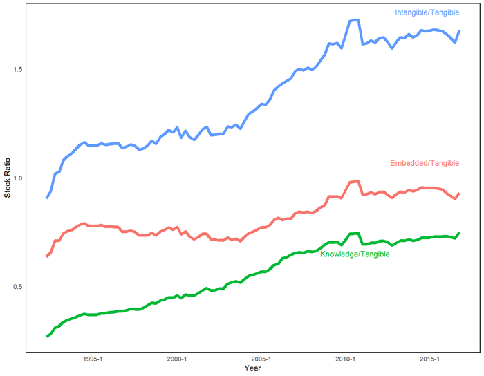

Download
Abstract
This paper explores the empirical observation of the rising intangible-to-tangible ratio since 1990, then its stagnation in the past decade accounting for intangible heterogeneities. I propose that not only firms’ transferable assets (R&D, productivity) but also embedded intangible assets, such as brand value and organizational capital, influence business dynamics. I employ a Schumpeterian step-by-step innovation model to illustrate how the dynamics of intangible assets can shed light on empirical observations, including higher R&D and embedded intangible asset intensity, slowdown business dynamics, and increasing markup. The model shows that embedded assets significantly contribute to increasing the intangible-to-tangible ratio during the transitional period. Conversely, they have a level effect rather than a growth effect in the long run. In addition, I implement the span of control on the endogenous growth model, and when firms add multiple production lines, their total markup and profit rise—however, each production line’s markup and profit decrease due to the span of control problem. From a welfare perspective, embedded intangible assets affect the product’s demand and price in the transitional period. The demand effect has a positive impact, while the price effect has a negative impact, which effect dominates depending on the joint distribution of the number of production lines that firms have, productivity, and the embedded intangible gap in each sector.
Figure 1: Parallel Trends for Intangible Assets
